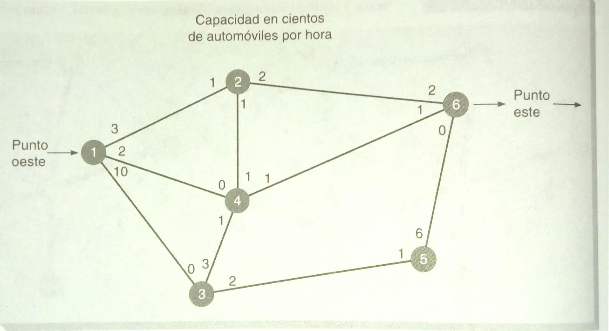

La técnica de flujo máximo permite determinar la cantidad máxima de un material que puede fluir a través de una red. Ha sido utilizada, por ejemplo, para encontrar el número máximo de automóviles que pueden fluir por un sistema estatal de carreteras.
La técnica de flujo máximo no es difícil. Implica los pasos siguientes:
1. Elija cualquier trayectoria del inicio (origen) a la terminación (destino) con algo de flujo. Si no existe ninguna trayectoria con flujo, entonces se llegó a la solución óptima.
2. Localice el arco en la trayectoria con la capacidad de flujo más pequeña disponible. Llame C a esta capacidad. Ésta representa la capacidad máxima adicional que puede ser asignada a esta ruta.
3. Por cada nodo que haya en esta trayectoria, disminuya la capacidad de flujo en la dirección del flujo en la cantidad C por cada nodo que haya en esta trayectoria, incremente la capacidad de flujo en la dirección inversa en la cantidad C.
4. Repita estos pasos hasta que ya no sea posible incrementar el flujo.
Ejercicio:
Waukesha, una pequeña ciudad de Wisconsin, se encuentra en el proceso de desarrollar un sistema de ejes viales para agilizar la circulación en el centro. Bill Blackstone, uno de los planificadores de la ciudad, desea determinar el número máximo de automóviles que pueden fluir por la ciudad de oeste a este. La red de ejes viales se ve en la siguiente figura:

Elaboración propia
Las calles están indicadas por sus respectivos nodos. Observe la calle entre los nodos 1 y 2. Los números cercanos a los nodos indican el número máximo de automóviles (en cientos de automóviles por hora) que pueden fluir desde los varios nodos. El número 3 cerca del nodo 1 indica que 300 automóviles por hora pueden fluir del nodo 1 al 2. Como se puede ver, el flujo máximo del nodo 2 de regreso al 1 es de 100 automóviles por hora. Observe que el tráfico puede fluir en ambas direcciones por una calle. Un cero significa nada de flujo o una calle de un sentido [2].